OpenCV offers a good face detection and recognition module (by Philipp Wagner). It contains algorithms which can be used to perform some cool stuff. In this guide I will roughly explain how face detection and recognition work; and build a demo application using OpenCV which will detect and recognize faces. (Also, there is a nice video of the result at the end).
Theory
Face Detection
As can be assumed, detecting a face is simpler than recognizing a face of a specific person. In order to be able to determine that a certain picture contains a face (or several) we need to be able to define the general structure of a face. Luckily human faces do not greatly differ from each other; we all have noses, eyes, foreheads, chins and mouths; and all of these compose the general structure of a face.
Consider the following 5 figures:
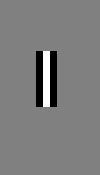
Each of these figures represents a general feature of a human face. Combining all the features together we, indeed, receive something that resembles a face.
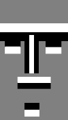
By determining if each of these features is similar to some part of our picture, we can conclude if the picture contains a face or not. Notice that this does not have to be an accurate match; we just need to know if, roughly, each of these features corresponds to some part of the image. The technique used for this purpose is Template Matching.
By gathering statistics about which such features compose faces and how, we can train our algorithm to use the right features in the right positions; and thus detect faces.
Let's see an example. See in the figures below how the above features can be used to detect a face (namely, the face of President Barack Obama).
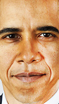 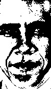 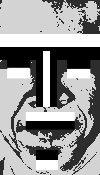
In order for this process be quick, we design it in such a way that we first check the coarse features which represent the coarse structure of a face; and only if these features match, we continue to the next iteration and use finer features. In each such iteration we can quickly reject areas of the picture which do not match a face, and keep checking those which we are not sure about. In every iteration we increase the certainty that the checked area is indeed a face, until finally we stop and make our determination.
In other words, rather than determining if the image does contain a face, we can more quickly determine if the image does not contain a face; because eliminations can be done quickly, while acceptance of faces will require more time. We call such a process a cascading process.
The method depicted here is an over-simplified description of the Viola-Jones method (also known as Haar cascades). A very nice visualization of this method can be seen in the following video by Adam Harvey.
Face Recognition
The difference between face detection and recognition is that in detection we just need to determine if there is some face in the image, but in recognition we want to determine whose face it is. In the above example we detected a face, which we recognize as President Obama.
In order to understand the methods for recognizing faces, more advanced mathematical knowledge is required; namely linear algebra and statistics.
OpenCV provides three methods of face recognition: Eigenfaces, Fisherfaces and Local Binary Patterns Histograms (LBPH).
All three methods perform the recognition by comparing the face to be recognized with some training set of known faces. In the training set, we supply the algorithm faces and tell it to which person they belong. When the algorithm is asked to recognize some unknown face, it uses the training set to make the recognition. Each of the three aforementioned methods uses the training set a bit differently.
Eigenfaces and Fisherfaces find a mathematical description of the most dominant features of the training set as a whole. LBPH analyzes each face in the training set separately and independently.
An example training set:
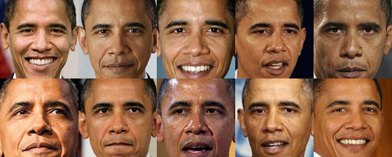
Eigenfaces & Fisherfaces
Those familiar with linear algebra will remember that every vector space has an orthogonal basis. By combining elements of this basis we can compose every vector in this vector space. And vice versa, every vector in the vector space can be decomposed to the elements of the basis.
Images (grayscale) are nothing more than a series of numbers, each number corresponding to some intensity level. So why not treat images as vectors? Say, for example, we have a collection of face images of size 150 by 150 pixels; each of these images can be thought of as a vector of size 22,500 (150*150). We can now talk about the vector space in which these vectors reside. By treating the images as samples of data, we can perform a Principal Components Analysis and obtain the eigenvectors which make up the basis of the vector space.
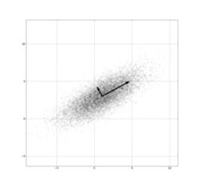
Principal components of a dataset (Source: Wikipedia).
{kind=link}
These eigenvectors represent the most prominent features of the dataset, and since we talk about face images, the eigenvectors actually represent the strongest characteristics of the faces in the dataset. See for example the first 8 eigenvectors of the dataset from above:
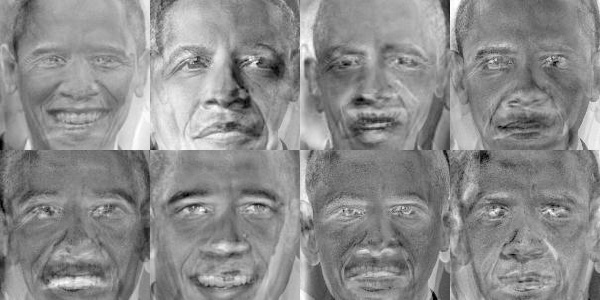
(To extract the eigenfaces of the training set I wrote a small Matlab script
which can be obtained here).
Now, whenever we are provided with a new, unknown, face, we can decompose it to the basis we found, see which eigenvector(s) “explain” most of the face, and thus determine to which person it belongs.
Local Binary Patterns Histogram
The LBPH method takes a different approach than the eigenfaces method. In LBPH each images is analyzed independently, while the eigenfaces method looks at the dataset as a whole. The LBPH method is somewhat simpler, in the sense that we characterize each image in the dataset locally; and when a new unknown image is provided, we perform the same analysis on it and compare the result to each of the images in the dataset. The way which we analyze the images is by characterizing the local patterns in each location in the image.
Following is such a local binary patterns analysis on each of the images of the dataset from above:
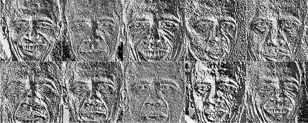
(To extract the local binary patterns of the training set I used this Matlab
script).
Demo Application
For the purpose of this guide, and to make it interesting, we will build an application which given a video file and a person, seeks this person in the video. Formally, we define the following inputs and outputs of our application:
Inputs:
- A video file.
- A person. We need around 10 different images of this person's face in order to be able to recognize him/her. We will use the dataset of the faces of President Barack Obama presented earlier.
Outputs:
- A video file which is identical to the original video, except that the face of the recognized person is in a green circle, and unrecognized faces in red circles.
- A CSV file which gives the recognition confidence for each recognized face in each frame of the video.
The Plan
Before we start coding, we better understand the different components in our application.
As was already mentioned, our goal is to determine in which frames of the video our chosen person appears. We also want to create two output files, a video in which the faces are circled in green or red (depending upon the person to which the face belongs), and a CSV file with the confidence level of each face in each frame. For this, I propose the following scheme:
- Read the next frame of the input video.
- Detect all the faces in the frame.
- Try to recognize each of the detected faces as our chosen person.
- If successful, draw a green circle around the face. Otherwise, draw a red circle.
- Write the confidence level of each face in the frame to a CSV file.
- Repeat steps 1-5 until no more frames in the input video.
Evidently, our application should have the following major components:
- Frames reader.
- Faces detector.
- Person recognizer.
- Frames writer.
- CSV writer.
Each of these components will be expanded in the following sections.
Note:
In order to simplify this guide, we will do only frontal faces detection.
The Code
The full code of the application can be obtained in this git repository (It's a Netbeans project which you can load directly to your Netbeans IDE).
Faces Detector
#!c++
class FaceDetector {
public:
FaceDetector(
const string &cascadePath,
double scaleFactor,
int minNeighbors,
double minSizeRatio,
double maxSizeRatio);
virtual ~FaceDetector();
void findFacesInImage(const Mat &img, vector<Rect> &res);
private:
CascadeClassifier _cascade;
double _scaleFactor;
int _minNeighbors;
double _minSizeRatio;
double _maxSizeRatio;
};
As explained earlier in this guide, we use the Haar cascades method to do the
detection. OpenCV provides the CascadeClassifier object for this purpose,
which I recommend reading about (Here).
In the FaceDetector class of our application we implement a method
findFacesInImage which, given an image, returns the rectangular coordinates
of all faces in it. Note that in this application we detect only frontal faces.
Implementing detection of profiles and faces from other angles is very similar
and straightforward.
Person Recognizer
#!c++
class PersonRecognizer {
public:
PersonRecognizer(const vector<Mat> &imgs, int radius, int neighbors,
int grid_x, int grid_y, double threshold);
virtual ~PersonRecognizer();
bool recognize(const Mat &face, double &confidence) const;
private:
Ptr<FaceRecognizer> _model;
Size _faceSize;
};
Following the explanation about face recognition, we will be using the LBPH
method. We will use OpenCV's FaceRecognizer module. Look at the full
code to see the specifics of the implementation. The PersonRecognizer
class is trained (upon construction) to recognize a specific person, by
receiving a vector of faces which belong to this person. In the code you will
see the implementation of the recognize method, which given an image of a
face will determine if this is the person the class was trained to recognize.
The method returns a Boolean value according to the result of the recognition,
and if there was recognition, the confidence is stored in the confidence
variable.
Frames Reader
Luckily, OpenCV offers a good library for handling video files, which we will wrap with our own interface.
We define the following class:
#!c++
class FramesReader
{
public:
FramesReader(const string &vidPath, int startFrame, int endFrame, int delta);
virtual ~FramesReader();
bool getNext(Mat &frame);
Size getSize();
private:
VideoCapture _vid;
int _endFrame,
_delta;
};
We use the getNext method to obtain the next frame in the video, and
getSize to obtain the size of the frame (in pixels).
Frames Writer
We define the following class, which is self explanatory:
#!c++
class FramesWriter
{
public:
FramesWriter(const string vidPath, double fps, Size size, int fourcc);
virtual ~FramesWriter();
void write(Mat &frame);
private:
VideoWriter _vid;
Size _f_size;
};
CSV Writer
#!c++
class CsvWriter {
public:
CsvWriter(const string &csvPath);
virtual ~CsvWriter();
void nextLine();
void addEntry(const string &s);
private:
ofstream _fs;
bool _isFirstEntry;
};
Results
In order to test the application we run it on this video of President Barack Obama. We use the training set from above.
The resulting output video:
By using the data of the CSV file, we obtain the confidence level in each frame of the video:
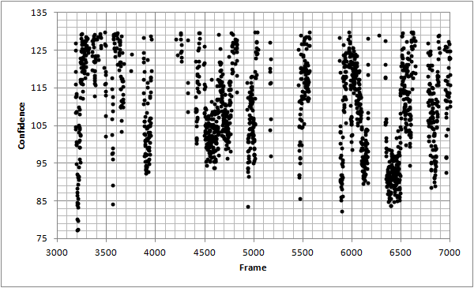
By setting some threshold value, we can obtain a binary determination (yes/no) of which frames contain the face (frontal) of President Obama:
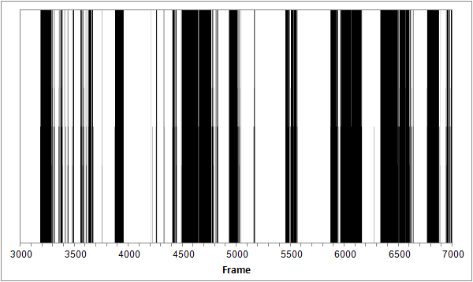
For example, we can tell, just by looking at this analysis, that in frame 4100 President Obama does not face forward, but in frame 4600 he does:
Frame 4100:
Frame 4600:
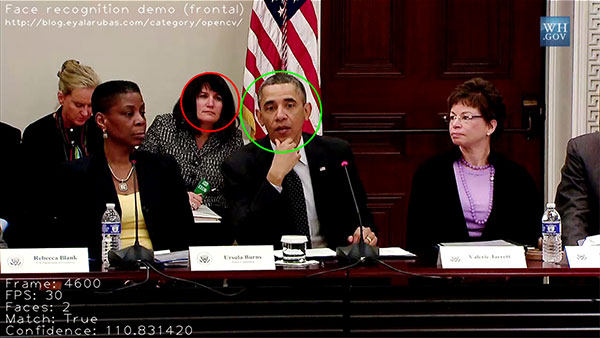
Summary
We have seen examples of both detection and recognition of faces. The theory behind the two subjects is quite interesting. The OpenCV library implements for us the major algorithms used for these tasks.
By employing OpenCV we built an example application which is capable of recognizing a specific person in a video, which might also contain other people. The application successfully recognized where in the video our chosen person (President Obama) faces towards the camera.
As was mentioned, the application was trained to recognize and detect only frontal faces, but it can be easily extended to recognize and detect faces in more angles and positions.